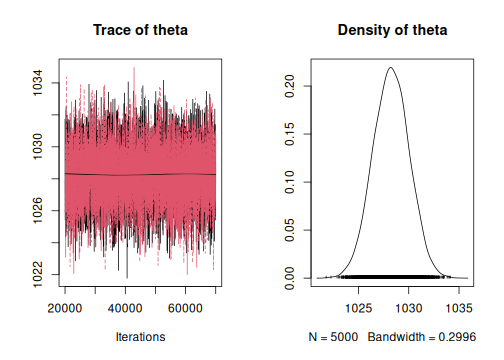
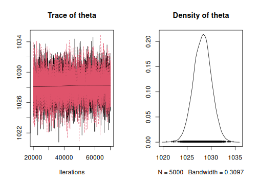
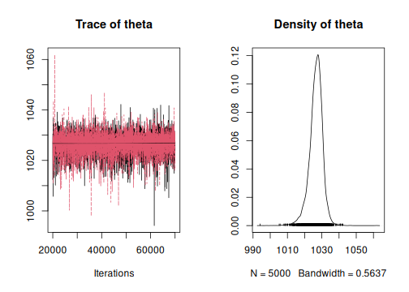
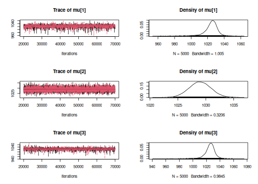
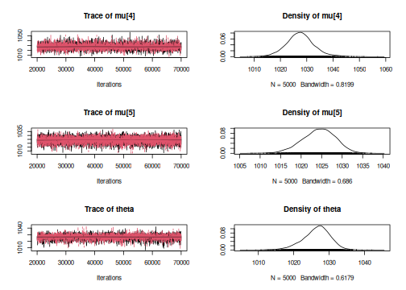

Introduction to ArchaeoChron
A. Philippe and M.-A. Vibet
2023-06-01
Source:vignettes/ArchaeoChron.Rmd
ArchaeoChron.Rmd
## Load packages
library(ArchaeoChron)
library(ArchaeoPhases)
library(coda) # MCMC diagnosticBayesian model for combining Gaussian dates
Example of a sunspot
The sunspot data is constituted of several dates assumed to be contemporaneous of a single event. These dates do not need any calibration but their unit is in year before 2016.
Simple model for combining Gaussian dates
Let’s first use a simple Bayesian model.
data(sunspot)
MCMC1 <- combination_Gauss(
M = sunspot$Age[1:5],
s = sunspot$Error[1:5],
refYear = rep(2016, 5),
studyPeriodMin = 900,
studyPeriodMax = 1500,
variable.names = c('theta')
)
#> [1] "Update period"
#> [1] "Acquire period"The output of the function combination_Gauss() is a
Markov chain of the posterior distribution of the Bayesian model.
Convergence of the Markov chain
First, let’s check the convergence of the Markov chain of each parameter.
plot(MCMC1)
gelman.diag(MCMC1)
#> Potential scale reduction factors:
#>
#> Point est. Upper C.I.
#> theta 1 1The Gelman diagnotic gives point estimates about 1, so convergence is reached.
Statistics of the posterior distribution of the event.
Now, we can use the package ArchaeoPhases in order to describe the posterior distribution of the parameters.
Here we will focus on the posterior distribution of the date of interest, i.e. the parameter theta.
MCMCSample1 <- cbind(MCMC1[[1]], MCMC1[[2]])
MCMCEvent1 <- as_events(MCMCSample1, calendar = CE())
(M1 <- summary(MCMCEvent1[, 1], level = 0.95))
#> mad mean sd min q1 median q3 max start end
#> theta 1028 1028 3 1021 1027 1028 1029 1035 1025 1032
plot(MCMCEvent1[, 1], level = 0.95)
The date (mean posterior distribution) of the sunspot estimated using a simple Bayesian model that combines dates, is dates at 1028 years after Christ. This date is associated with a 95% confidence interval : [1025, 1032].
Bayesian model for combining Gaussian dates and handling potential outliers
Let’s use the function
combinationWithOutliers_Gauss().
MCMC2 <- combinationWithOutliers_Gauss(
M = sunspot$Age[1:5],
s = sunspot$Error[1:5],
refYear = rep(2016, 5),
outliersIndivVariance = rep(1, 5),
outliersBernouilliProba = rep(0.2, 5),
studyPeriodMin = 800,
studyPeriodMax = 1500,
variable.names = c('theta')
)
#> [1] "Update period"
#> [1] "Acquire period"
plot(MCMC2)
The output of the function
combinationWithOutliers_Gauss() is a Markov chain of the
posterior distribution of the Bayesian model.
Here we will focus on the posterior distribution of the date of interest i.e. the parameter ’theta*.
MCMCSample2 <- cbind(MCMC2[[1]], MCMC2[[2]])
MCMCEvent2 <- as_events(MCMCSample2, calendar = CE())
(M2 <- summary(MCMCEvent2[, 1], level = 0.95))
#> mad mean sd min q1 median q3 max start end
#> theta 1028 1028 3 1022 1027 1028 1029 1036 1025 1032
plot(MCMCEvent2[, 1], level = 0.95)
The date (mean posterior distribution) of the sunspot, estimated using a simple Bayesian model that combines dates and allows for outliers, is dates at 1028 years after Christ. This date is associated with a 95% confidence interval : [1025, 1032].
Bayesian model for combining Gaussian dates with a random effect
Let’s now use the function
combinationWithRandomEffect_Gauss().
MCMC3 <- combinationWithRandomEffect_Gauss(
M = sunspot$Age[1:5],
s = sunspot$Error[1:5],
refYear = rep(2016, 5),
studyPeriodMin = 0,
studyPeriodMax = 1500,
variable.names = c('theta')
)
#> [1] "Update period"
#> [1] "Acquire period"
plot(MCMC3)
The output of the function
combinationWithRandomEffect_Gauss() is a Markov chain of
the posterior distribution of the Bayesian model.
Here we will focus on the posterior distribution of the date of interest i.e. the parameter ’theta*.
MCMCSample3 <- cbind(MCMC3[[1]], MCMC3[[2]])
MCMCEvent3 <- as_events(MCMCSample3, calendar = CE())
(M3 <- summary(MCMCEvent3[, 1], level = 0.95))
#> mad mean sd min q1 median q3 max start end
#> theta 1028 1027 5 1004 1025 1027 1029 1042 1019 1034
plot(MCMCEvent3[, 1], level = 0.95)
The date (mean posterior distribution) of the sunspot, estimated using a simple Bayesian model that combines dates and allows for random effects, is dates at 1027 years after Christ. This date is associated with a 95% confidence interval : [1019, 1034].
Event Model : Bayesian model for combining Gaussian dates with individual random effects
If we want to date that event, we can use the Event model for combining Gaussian dates. In that example, we will investigate the posterior distribution of the date of the event (called ’theta*) and the posterior distribution of the dates associated with this event.
Generating the Markov chain of the posterior distribution
Finally, let’s use the function eventModel_Gauss() and
the first 10 dates of the dataset sunspot. The study period should be
given in calendar year (BC/AD).
MCMC4 <- eventModel_Gauss(
M = sunspot$Age[1:5],
s = sunspot$Error[1:5],
refYear = rep(2016, 5),
studyPeriodMin = 900,
studyPeriodMax = 1500,
variable.names = c('theta', 'mu')
)
#> [1] "Update period"
#> [1] "Acquire period"The output of the eventModel_Gauss() is the Markov chain
of the posterior distribution.
Convergence of the Markov chain
First, let’s check the convergence of the Markov chain of each parameter.
plot(MCMC4)
gelman.diag(MCMC4)
#> Potential scale reduction factors:
#>
#> Point est. Upper C.I.
#> mu[1] 1 1
#> mu[2] 1 1
#> mu[3] 1 1
#> mu[4] 1 1
#> mu[5] 1 1
#> theta 1 1
#>
#> Multivariate psrf
#>
#> 1The Gelman diagnotic gives point estimates about 1, so convergence is reached.
Statistics of the posterior distribution of the event.
Here we will focus on the posterior distribution of the event of interest (parameter ’theta*).
MCMCSample4 <- cbind(MCMC4[[1]], MCMC4[[2]])
MCMCEvent4 <- as_events(MCMCSample4, calendar = CE())
(M4 <- summary(MCMCEvent4[, 6], level = 0.95))
#> mad mean sd min q1 median q3 max start end
#> theta 1027 1026 5 1005 1024 1027 1029 1039 1018 1034
plot(MCMCEvent4[, 6], level = 0.95)
The date (mean posterior distribution) of the sunspot, estimated using a simple Bayesian model that combines dates and allows for individual random effects, is dates at 1026 years after Christ. This date is associated with a 95% confidence interval : [1018, 1034].